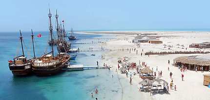

| town | monastir | djerba | mehdia | hamamet | Tabarka | klibia |
|---|---|---|---|---|---|---|
| pictures |  |
 |
|

|
![klibia]()
|
|
| description |
monastir is a city on the central coast of Tunisia, in the Sahel area, some 20 kilometres (12 miles) south of Sousse and 162 kilometres (101 miles) south of Tunis. Traditionally a fishing port, Monastir is now a major tourist resort. Its population is about 93,306. It is the capital of Monastir Governorate. |
djerba is a city in Tunisia, located 270 km southeast of Tunis. The city, founded in AD 849 on the ruins of Berber Taparura, is the capital of the Sfax Governorate and a Mediterranean port. Sfax has a population of 330,440 The main industries are phosphate, olive and nut processing, fishing (largest fishing port in Tunisia) and international trade. The city is the second-most populous after the capital, Tunis |
is a Tunisian coastal city with 62,189 inhabitants, south of Monastir and southeast of Sousse. Mahdia is a provincial centre north of Sfax. It is important for the associated fish-processing industry, as well as weaving. It is the capital of Mahdia Governorate. |
is a town in Tunisia. Thanks to its beaches, it is a popular destination for swimming and water sports and is one of the primary tourist destinations in Tunisia. It is located in the south-eastern section of Cap Bon and is part of the Nabeul Governorate. The reported number of inhabitants varies from 100,000 to 400,000 and the population quadruples due to tourists' arrival in the summer. It is particularly known for jasmine, which is the namesake of the tourist resort of Yasmine Hammamet. All over Hammamet, souvenirs crafted from jasmine can be found. |
the small town of Tabarka is located in a natural site of great beauty. All around, pine forests, rocky coves and lookout points offering panoramic views over superb untouched landscapes. The old Genoese Fort faithfully watches over this small coastal town, its fishing harbour and its marina. |
klibia is a coastal town on the Cap Bon peninsula, Nabeul Governorate in the far north-eastern part of Tunisia. Its sand beaches are considered some of the finest in the Mediterranean |
| town | mednin | tunis | silyena | gafsa | touzer | zaghoene |
|---|---|---|---|---|---|---|
| pictures |  |
 |

|

|

|
|
| description |
In pre-colonial times, Medenine was already the most important trading centre in the south, attracting merchants from all over North Africa and even from Bornu, to the south of the Sahara. The Ksar housed the central granaries of the various nomadic Berber tribes of the region. |
The souks of Tunis are a set of shops and boutiques located in the medina of Tunis, capital of Tunisia. Most of the souks were built under the Hafsid dynasty in the 13th century and near the Al-Zaytuna Mosque. They are organized in several streets and alleys.Souk Ech-Chaouachine for emp:Souk El Attarine Souk El Berka Souk El Bey Souk El Blaghgia Souk El Grana Souk El Kébabgia Souk El Kmach Souk El Nissa Souk El Trouk Souk En Nhas Souk Es Sabbaghine Souk Es Sarragine |
is a modern farming town in northern Tunisia. It is located at around 36°, 130 km south-west of the capital Tunis. It is the capital of the Siliana Governorate. It is located 4 miles away from Jama where the Battle of Zama occurred.Siliana Dam, is located 10 km north of the city of Siliana. |
Gafsa is the capital of the southwest of Tunisia and is both a historical oasis and home to the mining industry of Tunisia. The city had 111,170 inhabitants at the 2014 census, under the rule of the mayor, Helmi Belhani.[1] The city lies 369 km (229 mi) by road southwest of Tunis. |
is a city in southwest Tunisia. The city is located northwest of Chott el Djerid, in between this Chott and the smaller Chott el Gharsa. It is the capital of Tozeur Governorate. It was the site of the ancient city and former bishopric Tusuros, which remains a Latin |
is a town in the northern half of Tunisia. Situated on a low ridge of the Dorsale Mountains, the town has a mild climate and presents a green aspect. Cold water from here was taken by the Zaghouan Aqueduct to Carthage. The town is famous for its roses, originally cultivated by Muslim refugees from Spain in the seventeenth century. |